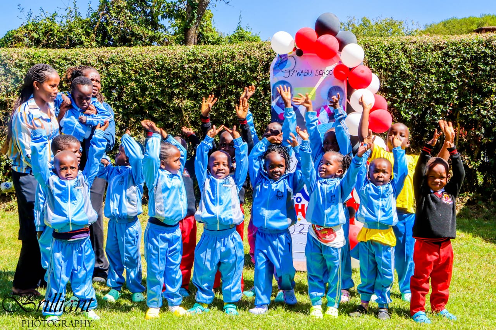
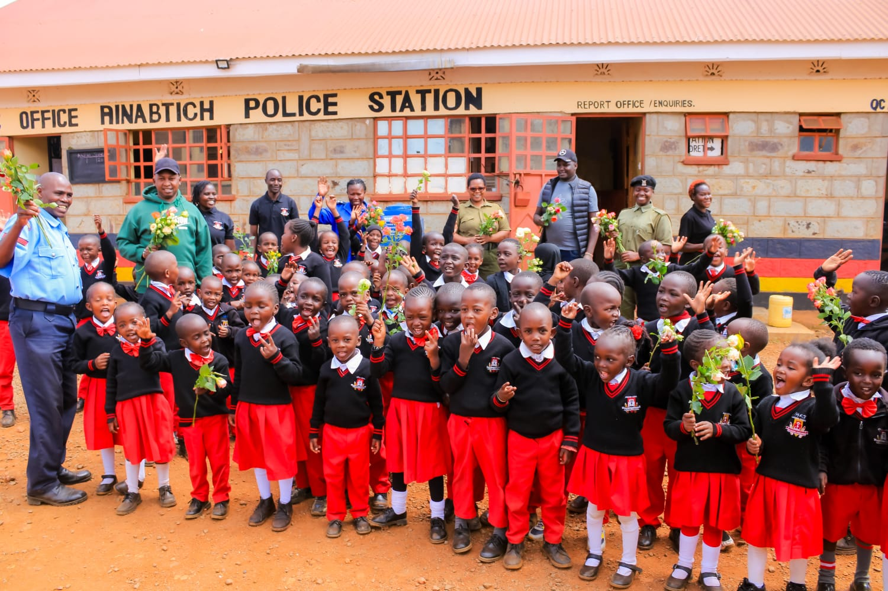

Mission,vision,values

Mission
Our mission is to provide a safe, supportive, and inspiring learning environment where every child is encouraged to develop academically, socially, and morally through quality education, creativity, and strong values.

Vision
To nurture confident, responsible, and creative learners who are prepared to make a positive impact in their communities and the world.

Values
1. Integrity
We promote honesty, responsibility, and doing the right thing at all times.
2. Respect
We treat every child, teacher, and member of the community with kindness, dignity, and understanding.
3. Excellence
We encourage every learner to strive for their best in academics, behavior, and personal growth.
4. Creativity
We inspire curiosity, imagination, and innovative thinking in learning.
5. Discipline
We promote self-control, responsibility, and positive behavior in all aspects of school life.